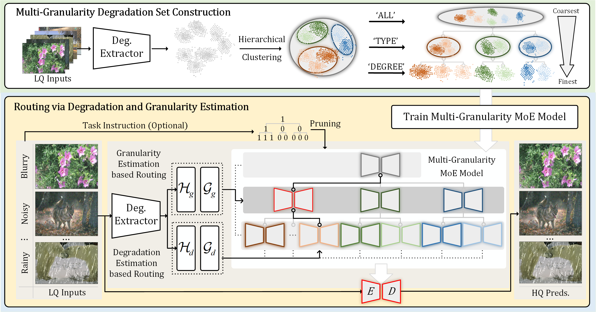

UniRestorer: Universal Image Restoration via
Adaptively Estimating Image Degradation at Proper Granularity
Jingbo Lin1Zhilu Zhang1Wenbo Li2Renjing Pei2
Hang Xu2Hongzhi Zhang1Wangmeng Zuo1
1Harbin Institute of Technology 2Huawei Noah's Ark Lab
[Paper]
[Code]

Comparisons with task-agnostic methods, all-in-one methods, and task-specific models on all-in-one image restoration.
(a) Comparisons on single-degradation setting.
(b) Comparisons with specific single-task models.
(c) Comparisons on mixed-degradation setting (in-distribution) .
(d) Comparisons on mixed-degradation setting (out-of-distribution) .
Abstract
Recently, considerable progress has been made in all-in-one image restoration.
Generally, existing methods can be degradation-agnostic or degradation-aware.
However, the former are limited in leveraging degradation-specific restoration, and the latter suffer from the inevitable error in degradation estimation.
Consequently, the performance of existing methods has a large gap compared to specific single-task models.
In this work, we make a step forward in this topic, and present our UniRestorer with improved restoration performance.
Specifically, we perform hierarchical clustering on degradation space, and train a multi-granularity mixture-of-experts (MoE) restoration model.
Then, UniRestorer adopts both degradation and granularity estimation to adaptively select an appropriate expert for image restoration.
In contrast to existing degradation-agnostic and -aware methods, UniRestorer can leverage degradation estimation to benefit degradation-specific restoration, and use granularity estimation to make the model robust to degradation estimation error.
Experimental results show that our UniRestorer outperforms state-of-the-art all-in-one methods by a large margin, and is promising in closing the performance gap to specific single-task models.
The code and pre-trained models will be publicly available.
Method

(a) Training of Deblur4DGS.
When processing \(t\)-th frame, we first discretize its exposure time into \(N\) timestamps.
Then, we estimate continuous camera poses \(\{\mathbf{P}_{t,i}\}_{i=1}^{N}\) and dynamic Gaussians \(\{\mathbf{D}_{t,i}\}_{i=1}^{N}\) within exposure time.
Next, we render each latent sharp image \(\hat{\mathbf{I}}_{t,i}\) with the camera pose \(\mathbf{P}_{t,i}\), dynamic Gaussians \(\mathbf{D}_{t,i}\) and static Gaussians \(\mathbf{S}\).
Finally, \(\{\hat{\mathbf{I}}_{t,i}\}_{i=1}^{N}\) are averaged to obtain the synthetic blurry image \(\hat{\mathbf{B}}_{t}\), which is used to calculate the reconstruction loss \(\mathcal{L}_{rec}\) with the given blurry frame \(\mathbf{B}_{t}\).
To regularize the under-constrained optimization, we introduce exposure regularization \(\mathcal{L}_{e}\), multi-frame consistency regularization \(\mathcal{L}_{mfc}\) and multi-resolution consistency regularization \(\mathcal{L}_{mrc}\).
(b) Rendering of Deblur4DGS. Deblur4DGS produces the sharp image with user-provided timestamp \(t\) and camera pose \(\mathbf{P}_{t}\).